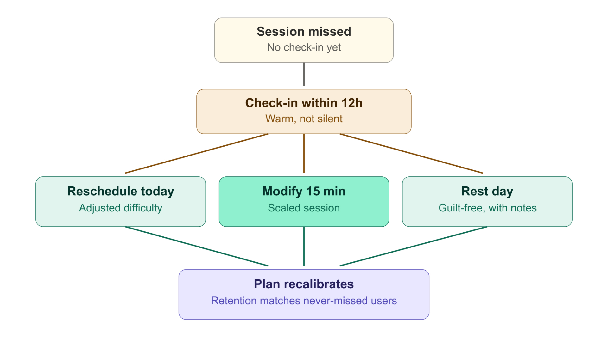
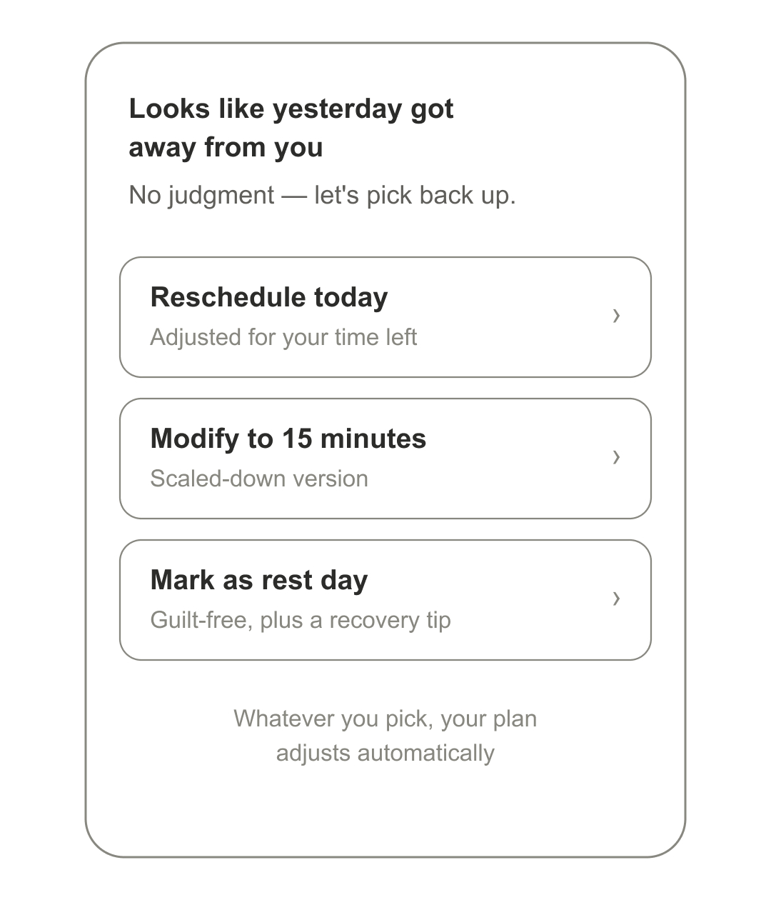
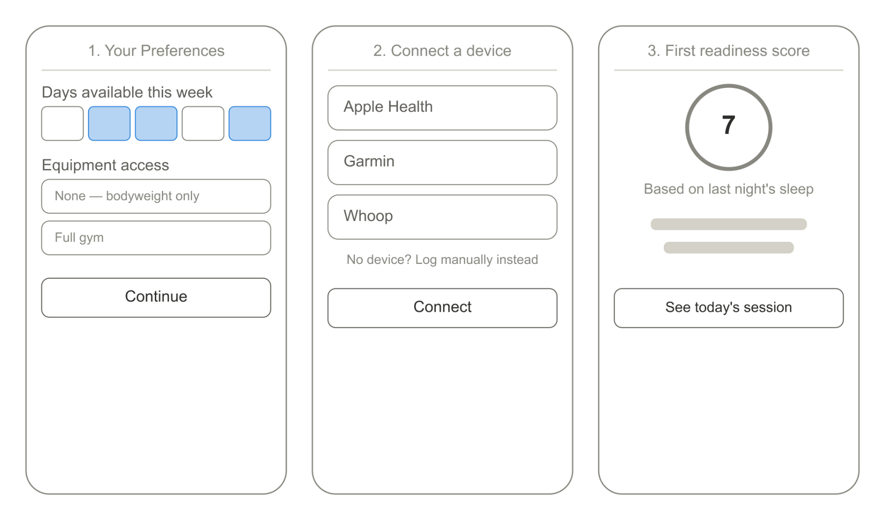
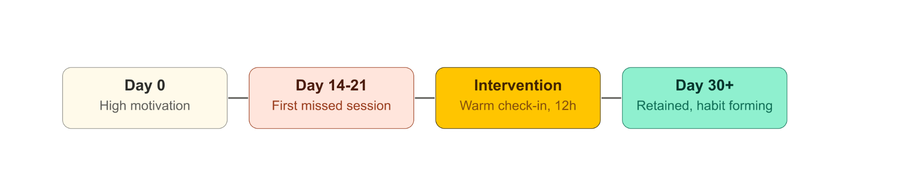
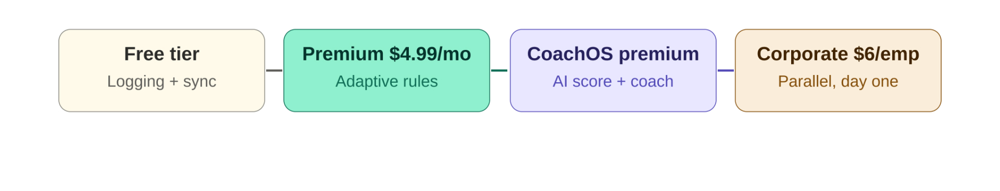

Consistent habits, not streaks
Most Fitness and Health Apps track everything while failing to help their users maintain consistent healthy habits. This fitness app that treats a missed workout as the most important product moment, and not as a failure.

The context
The average user opens a fitness app for three weeks after a motivation event (summer, a wedding, a health scare, a birthday) and then stops. The product challenge is not getting users to start. The challenge is getting them to continue when motivation is low, schedules are disrupted, and the programme isn't meeting them where they are. This teardown proposes solutions to improve consistency in a user's fitness journey.
Why fitness apps churn
Most fitness and wellness apps approach strength building as a sprint, making it time-based and outcome-driven, which often leads to burnout and inconsistency. They track everything yet fail to help users maintain consistent healthy habits.
Most apps also prescribe the same workout routines to users with different sleep schedules, eating habits, and strength goals, making recommendations generic. This case study focuses on helping users build consistency over time, treating a missed workout as the most important product moment, but not as a failure.
What the data says
-
0 1
Fitness apps experience the steepest churn curve of any consumer subscription category with massive January sign-ups followed by 40–60% cancellations by February.
-
0 2
Users who complete fewer than three workouts in their first 14 days churn at 3–4× the rate of users who establish a weekly habit.
-
0 3
Users offered a 'modified session' after a miss return to active use at 3× the rate of users who receive no contact after missing.
-
0 4
Rigid weekly calendars don't adapt when life intervenes. Some users skip one day and then quit altogether.
-
0 5
Most apps make users feel worse after a missed session through broken streak counters and guilt-inducing notifications.
-
0 6
Generic programmes ignore fitness level, schedule, equipment access, health history, and recovery state.
-
0 7
There's a data overload presented but without proper guidance on what to do about any of it.
-
0 8
Siloed apps for fitness, sleep, nutrition, and mental health never share data, forcing users to install multiple apps to reach one goal.

Who this is for
She has tried a gym membership (cancelled at 6 weeks), a 30-day app challenge (abandoned day 12), and a personal trainer (stopped when it became too expensive).
Pain point: Every programme feels designed for someone more fit, with more time, and more consistency than she has. When she misses a session, the app makes her feel worse, not better.
Core need: A programme that acknowledges her real life, adapts when she misses a session, celebrates small wins, and doesn't punish gaps.
He has a fitness tracker, a gym membership, and a coaching app. Exercises inconsistently due to constant travel.
Pain point: Every workout app assumes gym access and a fixed schedule. Hotel room workouts with no equipment are not in any programme he has tried.
Core need: Context-aware daily programming that adjusts for current location, available equipment, and time.
Why this keeps happening
-
0 1
Generic programming ignores context
Apps ignore the signals they already have and default to one-size-fits-all plans for different types of users.
-
0 2
Missed-session UX shames the user
Broken streaks and guilt-inducing notifications punish returning users instead of guiding them back.
-
0 3
Data is displayed as information, not prescription
Users see scores but don't know what to do with them; the layer that converts data into action is missing.
-
0 4
Apps optimise for engagement, not habit
Daily active use and long-term habit formation are different goals that need different design solutions.
The bet
A fitness app designed to help individuals who have struggled to build a consistent strength training habit integrate exercise sustainably into their lifestyle. An app focused on long-term physical and mental health outcomes rather than short-term aesthetic results.
V1: Missed-session recovery first
If I were taking this product live, the platform would be redesigned around human behaviour: adaptive pacing via conditional rules, structured missed-session recovery, and integrated weekly summaries. I prioritised the missed-session recovery flow over deeper personalisation because the dropout moment is where retention is actually won or lost. Still in V1, I prioritised the coach flows for users looking to match with certified human coaches near them.

I included a missed-session reengagement flow: a warm check-in fires within 12 hours with three paths: reschedule for today (with adjusted difficulty), modify to 15 minutes (a scaled-down version), or mark as a rest day (guilt-free, with a recovery tip). The plan recalibrates around the miss. Users who choose any path are retained at the same rate as users who never missed.
Weekly insights are sent via the user's preferred channel showing an activity summary: sleep average, active days, mood, and steps. Surfacing one insight and one recommendation with encouraging messaging to keep users pumped for the next week.

AI-enhanced, sequenced second
I decided against leading with an AI-enhanced version as the primary product. It needs a meaningful volume of user-specific biometric history to be trustworthy, and a pre-launch product doesn't have that history. Shipping the AI layer first would mean asking users to trust a product with no track record, in a category where trust is already low.
The AI layer is added post-launch when real usage data exists: a daily readiness score from biometrics, fully personalised prescription, dropout prediction, and an LLM coach. The LLM coach carries a risk of unsafe advice on pain or injury questions, e.g. "I feel tired but want to train, should I?" I would only ship this with constitutional guardrails and a hard rule to defer to a medical provider on any pain or injury question. I'd rather delay this feature than ship it without that safeguard.
Competitive platforms like Apple Fitness+, Whoop, Oura, already offer readiness-style scoring. Where this stands out is the missed-session recovery mechanic and the deliberate non-AI-first sequencing that builds trust before asking users to rely on a model.

Audience, channels, pricing
Target audience
-
0 1
Primary: busy professionals 27–45 with inconsistent fitness habits and income for a premium tool.
-
0 2
Secondary: frequent travellers without fixed gym access.
-
0 3
Tertiary: corporate wellness programmes managing employee health as a retention benefit.
Channels
-
0 1
Wearable brand partnerships add a premium intelligence layer on top of raw device data.
-
0 2
Corporate wellness so employers can distribute to their teams as a health benefit.
-
0 3
Fitness influencer partnerships targeting the 'motivated but inconsistent' segment.
-
0 4
Freemium model: basic tracking free, adaptive AI coaching paid.

What I'd track
-
0 1
Day-30 programme adherence: a core retention signal measured by completed sessions vs. subscribed plan.
-
0 2
Miss recovery rate: percentage of users who miss a session and return to 'active' within 7 days.
-
0 3
Weekly active days (not daily active): for this product this is the right metric for long-term habit formation.
What I would mitigate
| Risk | Likelihood | Impact | Mitigation |
|---|---|---|---|
| Inaccurate readiness score causes harm (pushes injured user) | Low | High | User override always available; injury flag disables prescription and surfaces rest recommendation. |
| Wearable API access changes (Apple, Garmin) | Medium | High | Multi-provider integration from launch; degrade gracefully to manual input if an API is removed. |
| LLM coach gives dangerous exercise advice | Medium | Critical | Constitutional guardrails; always recommend a provider for pain, injury, or medical questions. |
| Low-income users cannot access premium tier | Medium | Medium | Free tier meaningful enough to build habit; premium unlocked via employer benefit or referral. |
What this taught me
-
0 1
The dropout moment is the most important moment in the product
The highest-value PM problem is the user who has missed three sessions in a row and is one bad week away from deleting the app. Most fitness apps over-invest in the motivated user and under-invest when motivation drops. Design for that user first.
-
0 2
Data without prescription is decoration
HRV scores and sleep stages mean nothing without an explanation of what to do because of them. The layer that converts data into action is not a feature; it is the product.
-
0 3
Behavioural science is a hire, not intuition
Streak mechanics, loss aversion framing, and social accountability are behavioural psychology, not product intuition. A behavioural scientist as a founding advisor would be a valuable early hire.
-
0 4
Track the metric that actually matters
The metric that proves the product solved the problem is simple: 'Are users exercising more now than before downloading this app?'